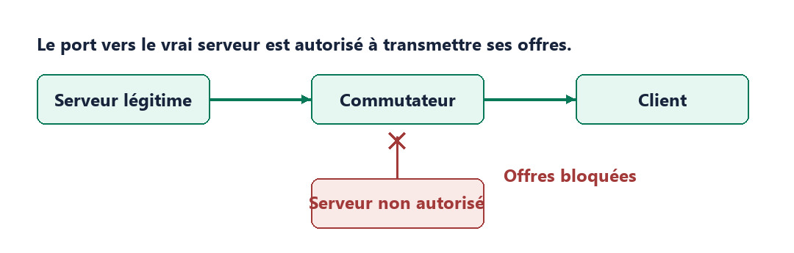

Comprendre le cours
1. Établir une architecture qui se vérifie par étapes
Le projet demande une petite entreprise avec plusieurs services. Commence par une table d’adressage. Pour chaque équipe, indique son VLAN, son sous-réseau, sa passerelle et la plage des clients. Ajoute les réseaux de serveurs, d’administration et de Wi-Fi si la maquette les sépare. Une matrice des flux indique qui doit atteindre quel service et par quel port.
Valide d’abord une liaison entre deux postes du même VLAN, puis la passerelle de chaque VLAN, puis le routage autorisé et enfin la sortie Internet selon la maquette. Un test refusé de la matrice vaut autant qu’un succès attendu.
2. Relier infrastructure et services
DHCP donne une adresse et des options au client. Si le serveur est dans un autre réseau, le relais ou l’équivalent dans la maquette doit lui transmettre la demande. DNS résout les noms, dont ceux utilisés pour localiser les services d’un domaine Windows. Active Directory centralise les identités. Le serveur de fichiers applique ensuite les permissions aux groupes appropriés.
Dans le service téléphonique, distingue l’inscription du terminal, la signalisation d’appel et la circulation de la voix. Fais un essai local avant d’ajouter les règles entre réseaux. Pour le Web dynamique, distingue l’authentification et l’action demandée. Un utilisateur connecté ne doit déclencher que les opérations qui lui sont autorisées.
3. Bloquer de fausses offres DHCP
Un serveur DHCP non autorisé peut répondre au client et lui fournir une autre passerelle ou un mauvais DNS. Le DHCP snooping trie les messages sur le commutateur. Les ports de confiance sont ceux par lesquels peuvent légitimement arriver les réponses du serveur. Les ports vers les clients restent non fiables. Vérifie les VLAN concernés et le chemin exact de la réponse avant de déclarer un port de confiance.

La starvation DHCP vise à épuiser la plage par de nombreuses demandes. Une limite de débit sur les ports d’accès peut réduire ce risque. Choisis les mécanismes que ton matériel permet, mesure une activité de référence et contrôle les compteurs après essai en laboratoire isolé. Une limite trop basse peut aussi bloquer des clients légitimes.
4. Détecter un comportement et le prouver
Pour détecter des mots de passe erronés à répétition, pars d’une trace de journal datée et d’un identifiant de compte. Décide quels événements sont des échecs et compte ceux du même compte dans une fenêtre glissante. Pour le test, veille à avoir un cas sous le seuil, un cas où le seuil est atteint et des échecs espacés.
Une page Web de démonstration devrait afficher l’état et les résultats obtenus, avec des commandes prédéfinies côté serveur. Fais valider les données et échappe le texte rendu. Les comptes, noms internes et traces présentés dans le rapport peuvent être remplacés par des valeurs de maquette.
Comment montrer que la séparation de deux services fonctionne ?
Prépare deux essais qui changent un seul paramètre. Depuis un poste de test, contacte d’abord un service explicitement autorisé puis une destination que la politique doit isoler. Note pour chacun la source, la destination, le protocole et la réponse attendue.
Un échec isolé pourrait venir d’un serveur éteint. Vérifie aussi que le service répond depuis un poste autorisé. Tu peux alors expliquer ensemble le témoin positif et le refus attendu.
Sujet · Prouver la communication autorisée entre les services
Sigles et acronymes
- DHCP · Dynamic Host Configuration Protocol
- Distribution automatique de la configuration IP.
Exemple. Un PC obtient une adresse, un masque, une passerelle et souvent un serveur DNS. - DNS · Domain Name System
- Système qui associe des noms à des informations comme une adresse IP.
Exemple. Un poste demande quelle adresse utiliser pour atteindre www.exemple.test. - IP · Internet Protocol
- Protocole d’adressage et d’acheminement des paquets.
Exemple. Le routeur lit l’IP de destination pour choisir où envoyer le paquet. - PHP · PHP: Hypertext Preprocessor
- Langage exécuté côté serveur.
Exemple. Le serveur utilise PHP pour lire un formulaire puis produire la réponse. - VLAN · Virtual Local Area Network
- Réseau local logique séparé sur une infrastructure partagée.
Exemple. Un switch sépare les postes du personnel et ceux des invités dans deux VLAN.
Du cours aux TD et TP
Questions TD & TP
Sujet · Prouver la communication autorisée entre les services
Énoncé du projet. Mettre en place une infrastructure pour les services finance, RH et technique, avec des postes et des serveurs utilisables.
- Pars du schéma physique. Pour chaque port, relève le rôle attendu, access ou trunk. Mets une passerelle dans chaque réseau à router.
- Prépare un test autorisé, par exemple un poste RH vers un service de fichiers destiné aux RH, et un test refusé depuis finance si la politique le prévoit. Note les IP, le protocole et la réponse attendue.
- Rejoue depuis les postes clients, puis vérifie les journaux et règles qui expliquent le résultat. Si l’accès échoue, confirme d’abord le bail, la gateway, le DNS et le chemin avant de changer les permissions.
Sujet · Tester les offres non autorisées et la limitation des demandes
Énoncé du projet. Démontrer que la maquette empêche le DHCP non autorisé et limite les tentatives d’épuisement de la plage.
- Dans le réseau de test isolé, capture une attribution de référence. Relève l’équipement qui envoie l’offre et les options données au client.
- Active le filtrage DHCP dans le VLAN concerné. Vérifie que les ports clients ne sont pas fiables et que les offres légitimes entrent par l’interface prévue. Rejoue le test et vérifie le bail du client.
- Lors de l’essai de validation prévu par le sujet, observe le traitement des offres sur les ports non fiables et les compteurs de limitation. Termine par une attribution normale pour confirmer que la protection n’a pas coupé le service utile.
Sujet · Signaler plusieurs erreurs sur le même compte
Énoncé du projet. Détecter plusieurs mots de passe erronés pour la même personne dans un intervalle court.
- Lis pour chaque échec la date et l’identifiant du compte. Trie les événements par temps. Garde une fenêtre de timestamps par compte et purge ceux qui sont trop anciens.
- Exemple de test avec un seuil choisi de trois erreurs en une minute. Les échecs d’Alice à 10:00:00, 10:00:20 et 10:00:40 déclenchent l’alerte. Deux échecs d’Alice et un de Bob doivent rester séparés.
- Ajoute un essai à la frontière d’une minute et annonce si elle est incluse. Affiche le compte, le nombre d’échecs et la plage horaire observés, sans afficher de mot de passe.
Sujet · Présenter l’état de la maquette et ses contrôles
Énoncé du projet. Produire une partie PHP authentifiée qui lance une opération de démonstration et affiche son résultat.
- Donne à chaque action autorisée un nom et associe-le côté serveur à un script connu. Vérifie la session et la permission avant l’exécution.
- Essaie avec un compte autorisé, sans connexion et avec une action inconnue. Dans les deux derniers cas, le script ne doit pas partir.
- Affiche un résultat structuré, l’heure du contrôle et un état de succès ou d’échec. Pendant la démonstration, fais le lien entre l’écran affiché, la configuration et ce qui est observable sur le réseau.